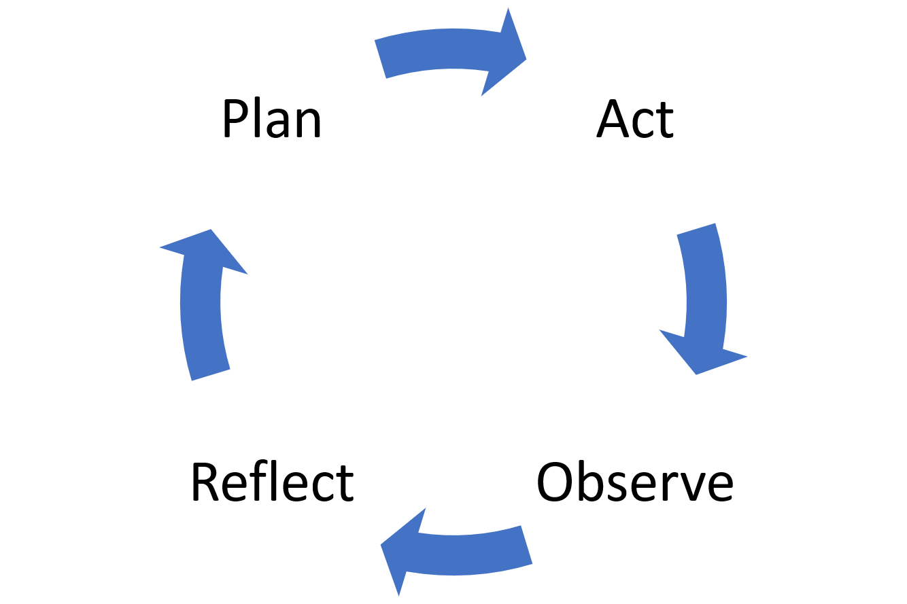

The Action Research Cycle
As we have discussed, action research consists of the undertaking of an action whilst at the same time investigating the impact of this action in some way.
Undertaking action research is often considered as a cyclical process. It might sound complex, but the cycle can be divided into four distinct phases. The various phases of the cycle are:
Click on the buttons below to explore the action research phases.
PLAN
-
The process starts with the planning of the action to be undertaken in order to overcome the identified problem, improve practice or develop a system in some way.
ACT
-
This is the phase in which the planned action is carried out.
OBSERVE
-
This is the part of the cycle where inquiry or research is undertaken. Data is collected and analysed in order to understand if the action was successful or whether further actions should be taken.
REFLECT
It is important to reflect on the outcome of the action undertaken, how well did the action work, what was its impact, what could be done better in future and so on.?
After the reflection phase, a new cycle can be planned and so the process continues until the objective of the study is achieved, or some other end point is reached. However, as action research is cyclical the process doesn’t necessarily have to stop at any particular point. Information gained from previous research may open new avenues of research.